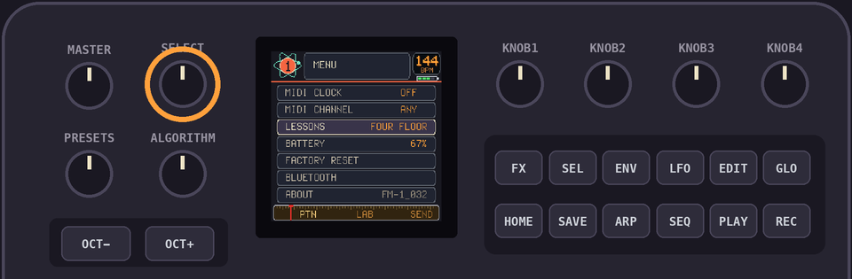
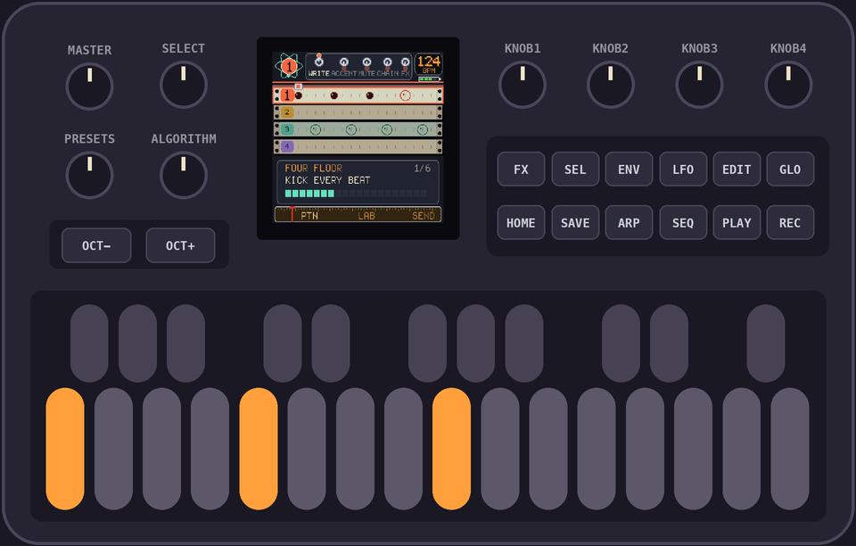

Drumlab DRUM PATTERNS
Common drum machine grooves, ready to write in. The idea is from Pocket Operations by Shittyrecording.studio, a book of patterns for pocket machines. These patterns are our own.
Sounds 1 to 4 are the top row of the pads: a kick, a snare, a hat and a bell, tom or cowbell. Every pattern here uses only them. Write one with REC: pick the sound with PRESETS, then press the steps.
Four on the floor
124 bpm, swing 0
sound 1: 1 5 9 13 · sound 3: 3 7 11 15
Backbeat
accents 5 13 · 110 bpm, swing 0
sound 1: 1 9 11 · sound 2: 5 13 · sound 3: 1 3 5 7 9 11 13 15
Boom bap
accents 5 13 · 90 bpm, swing 4
sound 1: 1 8 11 · sound 2: 5 13 · sound 3: 1 3 5 7 9 11 13 15
Offbeat hats
accents 5 13 · 126 bpm, swing 0
sound 1: 1 5 9 13 · sound 2: 5 13 · sound 3: 3 7 11 15 · sound 4: 16
Electro
accents 5 13 · 128 bpm, swing 0
sound 1: 1 4 9 12 · sound 2: 5 13 · sound 3: 3 7 11 15 · sound 4: 8 16
Hat roll
accents 9 · 140 bpm, swing 0
sound 1: 1 11 · sound 2: 9 · sound 3: 1 3 5 7 9 11 13 14 15 16
Breakbeat
accents 5 13 · 100 bpm, swing 0
sound 1: 1 4 7 11 · sound 2: 5 13 · sound 3: 1 3 5 7 9 11 13 15 · sound 4: 16
Half-time
accents 9 · 140 bpm, swing 0
sound 1: 1 8 12 · sound 2: 9 · sound 3: 1 3 5 7 9 11 13 15
Two-step
accents 5 13 · 132 bpm, swing 6
sound 1: 1 11 · sound 2: 5 13 · sound 3: 1 3 5 7 9 11 13 15
One drop
accents 9 · 76 bpm, swing 0
sound 1: 9 · sound 2: 9 · sound 3: 1 3 5 7 9 11 13 15
Trap
accents 9 · 140 bpm, swing 0
sound 1: 1 7 12 · sound 2: 9 · sound 3: 1 3 5 7 9 11 13 15 16 · sound 4: 15
Shuffle
accents 5 13 · 96 bpm, swing 10
sound 1: 1 9 · sound 2: 5 13 · sound 3: 1 3 5 7 9 11 13 15
♫Lessons on the device
GLO + HOME, turn SELECT to LESSONS, pick one with KNOB 1 and hit OCT+.
